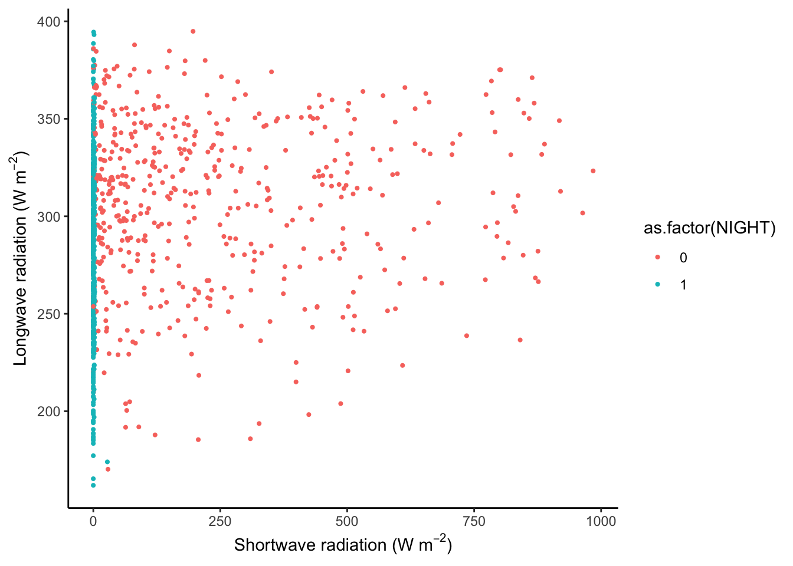

Chapter 8 Regression and classification
Chapter lead author: Pepa Aran
Contents:
- Difference between regression and classification
- Linear regression
- Logistic regression
- Regression metrics
- Classification metrics, another link
- Comparing models (AIC, …)
- Detecting outliers: identification via distributions [hist(), boxplot(), qqnorm()], multivariate (Cook’s Distance to get influential values)
- Feature selection, stepwise regression, multi-colinearity (vif)
8.1 Learning objectives
After completing this tutorial, you will be able to:
- Understand the basics of regression and classification models
- Fit linear and logistic regression models in R
- Choose and calculate relevant model performance metrics
- Evaluate and compare regression models
- Detect data outliers
- Select best predictive variables
8.2 Tutorial
# Load necessary packages
library(tidyr)
library(dplyr)
library(readr)
library(lubridate)
library(ggplot2)
library(caret)
library(broom)8.2.1 Types of models
Models try to explain relationships between variables through a mathematical formulation, particularly to predict a given target variable using other explanatory variables, also called predictors. Generally, we say that the target variable \(Y\) is a function (denoted \(f\)) of a set of explanatory variables \(X_1, X_2, \dots, X_p\) and some model parameters \(\beta\). Models can be represented as: \[Y \sim f(X_1, X_2, \dots, X_p, \beta)\]
This is a very general notation and depending on the structure of these components, we get to different modelling approaches.
The first distinction comes from the type of target variable. Whenever \(Y\) is a continuous variable, we are facing a regression problem. If \(Y\) is categorical, we talk about classification.
| Regression | Classification | |
|---|---|---|
| Target variable | Continuous | Categorical |
| Common models | Linear regression, polynomial regression, KNN, tree-based regression | Logistic regression, KNN, SVM, tree classifiers |
| Metrics | RMSE, \(R^2\), adjusted \(R^2\), AIC, BIC | Accuracy, precision, AUC, F1 |
8.2.2 Regression
In this section, we will introduce the most basic regression model: linear regression. We’ll explain how to fit the model with R, how to include categorical predictors and polynomial terms. Finally, several performance metrics for regression models are presented.
8.2.2.1 Linear regression
Theory
Let’s start with the simplest model: linear regression. You probably have studied linear regression from a statistical perspective, here we will take a data-fitting approach.
For example, we can try to explain the relationship between GPP and short wave radiation, like in the Chapter 4. The figure below shows a cloud of data points, and a straight line predicting GPP based on observed shortwave radiation values.
# read and format data from Ch 3
hhdf <- readr::read_csv("./data/FLX_CH-Lae_FLUXNET2015_FULLSET_HH_2004-2006_CLEAN.csv")## Rows: 52608 Columns: 20
## ── Column specification ────────────────────────────────────────────────────────
## Delimiter: ","
## dbl (18): TA_F, SW_IN_F, LW_IN_F, VPD_F, PA_F, P_F, WS_F, GPP_NT_VUT_REF, N...
## dttm (2): TIMESTAMP_START, TIMESTAMP_END
##
## ℹ Use `spec()` to retrieve the full column specification for this data.
## ℹ Specify the column types or set `show_col_types = FALSE` to quiet this message.set.seed(2023)
gg1 <- hhdf |>
sample_n(1000) |> # to reduce the dataset
ggplot(aes(x = SW_IN_F, y = GPP_NT_VUT_REF)) +
geom_point(size = 0.75) +
geom_smooth(method = "lm", color = "red") +
labs(x = expression(paste("Shortwave radiation (W m"^-2, ")")),
y = expression(paste("GPP (gC m"^-2, "s"^-1, ")"))) +
theme_classic()
segment_points <- data.frame(x0 = 332, y0 = 3.65, y_regr = 8.77)
gg1 +
geom_segment(aes(x = x0, y = y0, xend = x0, yend = y_regr),
data = segment_points,
color = "blue", lwd = 1.2, alpha = 0.8)## `geom_smooth()` using formula = 'y ~ x'
We want to find the best straight line that approximates a cloud of data points. For this, we assume a linear relationship between a single explanatory variable \(X\) and our target \(Y\): \[ Y_i \sim \beta_0 + \beta_1 X_i, \;\;\; i = 1, 2, ...n \;, \] where \(Y_i\) is the i-th observation of the target variable, and \(X_i\) is the i-th value of the (single) predictor variable. \(n\) is the number of observations we have and \(\beta_0\) and \(\beta_1\) are constant coefficients (model parameters). We call \(\beta_0\) the intercept and \(\beta_1\) the slope of the regression line. Generally, \(\hat{Y}\) denotes the model prediction.
Fitting a linear regression is finding the values for \(\beta_0\) and \(\beta_1\) such that, on average over all points, the distance between the line at \(X_i\), that is \(\beta_0 + \beta_1 X_i\) (blue segment in the plot above), and the observed value \(Y_i\), is as small as possible. Mathematically, this is minimizing the sum of the square errors, that is: \[ \min_{\beta_0, \beta_1} \sum_i (Y_i - \beta_0 - \beta_1 X_i)^2 . \] This linear model can be used to make predictions on new data, which are obtained by \(\hat{Y}_\text{new} = \beta_0 + \beta_1 X_\text{new}\). When the new data comes from the same distribution as the data used to fit the regression line, this should be a good prediction.
It’s not hard to imagine that the univariate linear regression can be generalized to a multivariate linear regression, where we assume that the target variable is a linear combination of \(p\) predictor variables: \[Y \sim \beta_0 + \beta_1 X_1 + \beta_2 X_2 + \; ... \; + \beta_p X_p \;.\] Note that here, \(X_1, \dots, X_p\) and \(Y\) are vectors of length corresponding to the number of observations in our data set (\(n\) - as above). Analogously, calibrating the \(p+1\) coefficients \(\beta_0, \beta_1, \beta_2, ..., \beta_p\) is to minimize the sum of square errors \(\min_{\beta} \sum_i (Y_i - \hat{Y}_i)^2\).
While the regression is a line in two-dimensional space for the univariate case, it is a plane in three-dimensional space for bi-variate regression, and hyperplanes in higher dimensions.
Implementation in R
To fit a univariate linear regression model in R, we can use the lm() function. Already in Chapter 3, we created linear models by doing:
# numerical variables only, remove NA
df <- hhdf %>%
dplyr::select(-starts_with("TIMESTAMP")) %>%
tidyr::drop_na()
# fit univariate linear regression
linmod1 <- lm(GPP_NT_VUT_REF ~ SW_IN_F, data = df)Here, GPP_NT_VUT_REF is \(Y\), and SW_IN_F is \(X\). We can include multiple predictors for a multivariate regression, for example as:
# fit multivariate linear regression
linmod2 <- lm(GPP_NT_VUT_REF ~ SW_IN_F + VPD_F + TA_F, data = df)or all available features in our data set (all columns other than GPP_NT_VUT_REF in df) as:
linmod3 <- lm(GPP_NT_VUT_REF ~ ., data = df)linmod* is now a model object of class "lm". It is a list containing the following components:
ls(linmod1)## [1] "assign" "call" "coefficients" "df.residual"
## [5] "effects" "fitted.values" "model" "qr"
## [9] "rank" "residuals" "terms" "xlevels"Enter ?lm in the console for a complete documentation of these components and other details of the linear model implementation.
R offers a set of generic functions that work with this type of object. The following returns a human-readable report of the fit. Here the residuals are the difference between the observed target values and the predicted values.
summary(linmod1)##
## Call:
## lm(formula = GPP_NT_VUT_REF ~ SW_IN_F, data = df)
##
## Residuals:
## Min 1Q Median 3Q Max
## -38.699 -2.092 -0.406 1.893 35.153
##
## Coefficients:
## Estimate Std. Error t value Pr(>|t|)
## (Intercept) 0.8732273 0.0285896 30.54 <2e-16 ***
## SW_IN_F 0.0255041 0.0001129 225.82 <2e-16 ***
## ---
## Signif. codes: 0 '***' 0.001 '**' 0.01 '*' 0.05 '.' 0.1 ' ' 1
##
## Residual standard error: 5.007 on 41299 degrees of freedom
## Multiple R-squared: 0.5525, Adjusted R-squared: 0.5525
## F-statistic: 5.099e+04 on 1 and 41299 DF, p-value: < 2.2e-16We can also extract coefficients \(\beta\) with
coef(linmod1)## (Intercept) SW_IN_F
## 0.87322728 0.02550413and the residual sum of squares (which we wanted to minimize) with
sum(residuals(linmod1)^2)## [1] 1035309Although summary() provides a nice, human-readable output, you may find it unpractical to work with. A set of relevant statistical quantities are returned in a tidy format using tidy() from the broom package:
broom::tidy(linmod1)## # A tibble: 2 × 5
## term estimate std.error statistic p.value
## <chr> <dbl> <dbl> <dbl> <dbl>
## 1 (Intercept) 0.873 0.0286 30.5 1.25e-202
## 2 SW_IN_F 0.0255 0.000113 226. 0Model advantages and concerns
An advantage of linear regression is that the coefficients provide information that is straight-forward to interpret. We’ve seen above, that GPP_NT_VUT_REF increases by 0.0255 for a unit increase in SW_IN_F. Of course, the units of the coefficients depend on the units of GPP_NT_VUT_REF and SW_IN_F. This has the advantage that the data does not need to be normalised. That is, a linear regression model with the same predictive skills can be found, irrespective of whether GPP_NT_VUT_REF is given in g C m\(^{-2}\)s\(^{-1}\) or in kg C m\(^{-2}\)s\(^{-1}\).
Another advantage of linear regression is that it’s much less prone to overfit than other algorithms. You’ll learn more about the concept of overfitting in Chapter @ref(#supervised_ml_a). Not being prone to overfitting can also be a disadvantage: linear regression models are often not flexible enough to be effectively fit to the data. They are also not able to capture non-linearities in the observed relationship and, as we’ll see later in this chapter, it exhibits a poorer performance than more complex models (e.g. polynomial regression) also on the validation data set.
A further limitation is that least squares regression requires \(n>p\). In words: the number of observations must be greater than the number of predictors. If this is not given, one can resort to step-wise forward regression, where predictors are sequentially added based on which predictor adds the most additional information at each step. XXX exercises XXX.
When multiple predictors are linearly correlated, then linear regression cannot discern individual effects and individual predictors may appear statistically insignificant when they would be significant if covarying predictors were not included in the model. Such instability can get propagated to predictions. Again, stepwise regression can be used to remedy this problem. However, when one predictor covaries with multiple other predictors, this may not work. For many applications in Geography and Environmental Sciences, we deal with limited numbers of predictors. We can use our own knowledge to examine potentially problematic covariations and make an informed pre-selection rather than throwing all predictors we can possibly think of at our models. Such a pre-selection can be guided by the model performance on a validation data set (more on that below).
An alternative strategy is to use dimension reduction methods. Principal Component regression reduces the data to capture only the complementary axes along which our data varies and therefore collapses covarying predictors into a single one that represents their common axis of variation. Partial Least Squares regression works similarly but modifies the principal components so that they are maximally correlated to the target variable. You can read more on their implementation in R here.
8.2.2.2 Regression on categorical variables
In the regression within categories section of Chapter 5, we saw that when we separate the data into sub-plots, hidden patterns emerge. This information is very relevant for modeling, because it can be included in our regression model. It is crucial to spend enough time exploring the data before you start modeling, because it helps to understand the fit and output of the model, but also to create models that capture the relationships between variables better.
# create month category
df_cat <- hhdf |>
mutate(MONTH = lubridate::month(TIMESTAMP_START)) |>
tidyr::drop_na() |>
dplyr::select(MONTH, GPP_NT_VUT_REF, SW_IN_F)So far, we have only used continuous variables as explanatory variables in a linear regression. It is also possible to use categorical variables. To do this in R, such variables cannot be of class numeric, otherwise the lm() function treats them as continuous variables. For example, although the variable NIGHT is categorical with values 0 and 1, the model linmod3 treats it as a number. We must make sure that categorical variables have class character or, even better, factor.
# fix class of categorical variables
df_cat <- df_cat |>
mutate(MONTH = as.factor(MONTH))Now we can fit the linear model again:
linmod_cat <- lm(GPP_NT_VUT_REF ~ MONTH + SW_IN_F, data = df_cat)
summary(linmod_cat)##
## Call:
## lm(formula = GPP_NT_VUT_REF ~ MONTH + SW_IN_F, data = df_cat)
##
## Residuals:
## Min 1Q Median 3Q Max
## -36.212 -2.346 -0.223 2.200 34.416
##
## Coefficients:
## Estimate Std. Error t value Pr(>|t|)
## (Intercept) 1.6146109 0.0893693 18.067 < 2e-16 ***
## MONTH2 -1.8105447 0.1294675 -13.985 < 2e-16 ***
## MONTH3 -2.8800172 0.1264177 -22.782 < 2e-16 ***
## MONTH4 -2.5667281 0.1278097 -20.082 < 2e-16 ***
## MONTH5 -0.0288745 0.1273491 -0.227 0.820631
## MONTH6 0.4614556 0.1298069 3.555 0.000378 ***
## MONTH7 0.1697514 0.1283830 1.322 0.186100
## MONTH8 1.2942463 0.1231252 10.512 < 2e-16 ***
## MONTH9 0.5140562 0.1165474 4.411 1.03e-05 ***
## MONTH10 -0.4807082 0.1152536 -4.171 3.04e-05 ***
## MONTH11 -1.3370277 0.1159059 -11.535 < 2e-16 ***
## MONTH12 -1.2634451 0.1151530 -10.972 < 2e-16 ***
## SW_IN_F 0.0246420 0.0001169 210.810 < 2e-16 ***
## ---
## Signif. codes: 0 '***' 0.001 '**' 0.01 '*' 0.05 '.' 0.1 ' ' 1
##
## Residual standard error: 4.865 on 41288 degrees of freedom
## Multiple R-squared: 0.5776, Adjusted R-squared: 0.5775
## F-statistic: 4704 on 12 and 41288 DF, p-value: < 2.2e-16In the fit summary, you can observe that, there are MONTH2 to MONTH12 parameters. MONTH is a factor which can take 12 different values: 1 to 12. lm() uses one of the factor level as the reference, in this case 1, and fits an intercept for the other categories. The result is a set of parallel regression lines, one for each different month.
In the grid image, we can observe that GPP does not increase with SW at the same rate every month. For example, the increase in GPP is less steep in February than in September. To model this, we should consider a variable slope parameter for each month or category. In R, this is implemented by including an interaction term MONTH:SW_IN_F in the regression formula, like this:
linmod_inter <- lm(GPP_NT_VUT_REF ~ MONTH + SW_IN_F + MONTH:SW_IN_F, data = df_cat)
# equivalently: lm(GPP_NT_VUT_REF ~ MONTH * SW_IN_F, data = df_cat)
summary(linmod_inter)##
## Call:
## lm(formula = GPP_NT_VUT_REF ~ MONTH + SW_IN_F + MONTH:SW_IN_F,
## data = df_cat)
##
## Residuals:
## Min 1Q Median 3Q Max
## -28.891 -2.113 -0.420 1.892 34.029
##
## Coefficients:
## Estimate Std. Error t value Pr(>|t|)
## (Intercept) 2.0449603 0.0944991 21.640 < 2e-16 ***
## MONTH2 -1.5386938 0.1369424 -11.236 < 2e-16 ***
## MONTH3 -1.5249304 0.1365863 -11.165 < 2e-16 ***
## MONTH4 -1.0050639 0.1396023 -7.199 6.15e-13 ***
## MONTH5 -0.4502367 0.1412720 -3.187 0.00144 **
## MONTH6 -1.2559057 0.1474257 -8.519 < 2e-16 ***
## MONTH7 -0.8440097 0.1446838 -5.833 5.47e-09 ***
## MONTH8 -0.2188300 0.1346734 -1.625 0.10419
## MONTH9 -1.3407190 0.1269387 -10.562 < 2e-16 ***
## MONTH10 -0.9991456 0.1235627 -8.086 6.32e-16 ***
## MONTH11 -1.2124373 0.1230946 -9.850 < 2e-16 ***
## MONTH12 -1.0724209 0.1210819 -8.857 < 2e-16 ***
## SW_IN_F 0.0158600 0.0008758 18.110 < 2e-16 ***
## MONTH2:SW_IN_F -0.0030373 0.0011518 -2.637 0.00837 **
## MONTH3:SW_IN_F -0.0058229 0.0009713 -5.995 2.05e-09 ***
## MONTH4:SW_IN_F -0.0038333 0.0009469 -4.048 5.17e-05 ***
## MONTH5:SW_IN_F 0.0087370 0.0009305 9.389 < 2e-16 ***
## MONTH6:SW_IN_F 0.0135219 0.0009172 14.743 < 2e-16 ***
## MONTH7:SW_IN_F 0.0110791 0.0009182 12.066 < 2e-16 ***
## MONTH8:SW_IN_F 0.0151014 0.0009317 16.209 < 2e-16 ***
## MONTH9:SW_IN_F 0.0180496 0.0009297 19.415 < 2e-16 ***
## MONTH10:SW_IN_F 0.0097277 0.0009761 9.966 < 2e-16 ***
## MONTH11:SW_IN_F -0.0011415 0.0010932 -1.044 0.29640
## MONTH12:SW_IN_F -0.0099745 0.0012972 -7.689 1.52e-14 ***
## ---
## Signif. codes: 0 '***' 0.001 '**' 0.01 '*' 0.05 '.' 0.1 ' ' 1
##
## Residual standard error: 4.593 on 41277 degrees of freedom
## Multiple R-squared: 0.6237, Adjusted R-squared: 0.6234
## F-statistic: 2974 on 23 and 41277 DF, p-value: < 2.2e-16df_cat |>
mutate(MONTH_NAME = lubridate::month(as.integer(MONTH), label = TRUE)) |>
ggplot(aes(x = SW_IN_F, y = GPP_NT_VUT_REF)) +
geom_point(alpha = 0.4) +
geom_smooth(formula = y ~ x + 0, method = "lm", color = "red", se = FALSE) +
labs(x = "SW", y = "GPP") +
facet_wrap(~MONTH_NAME) +
theme_classic()
8.2.2.3 Polynomial regression
Furthermore, the relationships between variables may be non-linear. In the previous example, we see that the increase in GPP saturates as shortwave radiation grows, which suggests that the true relationship could be represented by a curve. There are many regression methods that fit this kind of relationship, like polynomial regression, LOESS (local polynomial regression fitting), etc.
Let’s fit a simple quadratic regression model, just for the month of August. For this we use the poly() function which constructs orthogonal polynomials of a given degree:
quadmod <- lm(GPP_NT_VUT_REF ~ poly(SW_IN_F, 2),
data = df_cat |>
filter(MONTH == 8))
summary(quadmod)##
## Call:
## lm(formula = GPP_NT_VUT_REF ~ poly(SW_IN_F, 2), data = filter(df_cat,
## MONTH == 8))
##
## Residuals:
## Min 1Q Median 3Q Max
## -26.367 -2.055 -0.253 1.801 32.375
##
## Coefficients:
## Estimate Std. Error t value Pr(>|t|)
## (Intercept) 7.13084 0.07944 89.77 <2e-16 ***
## poly(SW_IN_F, 2)1 447.25113 4.61907 96.83 <2e-16 ***
## poly(SW_IN_F, 2)2 -151.08797 4.61907 -32.71 <2e-16 ***
## ---
## Signif. codes: 0 '***' 0.001 '**' 0.01 '*' 0.05 '.' 0.1 ' ' 1
##
## Residual standard error: 4.619 on 3378 degrees of freedom
## Multiple R-squared: 0.7556, Adjusted R-squared: 0.7555
## F-statistic: 5223 on 2 and 3378 DF, p-value: < 2.2e-168.2.2.4 Metrics for regression
We have explored several regression models to predict GPP based on SW. Now you may wonder how to choose one of them as your final analysis. Overall, we want to find the simplest model that best explains the data. We seek to find a balance between fitting the data well and generalizing to new data, which can be accomplished by reducing the complexity (for now, the number of parameters) of the model.
Visual inspection of the model fit is a good start, but can become uninformative when the number of explanatory variables grows. So how can we measure model quality? In this section, we present some commonly used metrics to assess and compare regression models.
MSE: The mean squared error is defined, as its name suggests, as: \[ \text{MSE} = \frac{1}{n} \sum_{i=1}^n (Y_i - \hat{Y_i})^2 \] It measures the magnitude of the errors, and is minimized to fit a linear regression or, as we will see in Chapter 9, during model training when used as a loss function. Note that since it scales with the square of the errors, the MSE is particularly sensitive to large errors in single points (including outliers).
RMSE: The root mean squared error is, as its name suggests, the root of the MSE: \[ \text{RMSE} = \sqrt{\text{MSE}} = \sqrt{\frac{1}{n} \sum_{i=1}^n (Y_i - \hat{Y_i})^2} \] Like the MSE, the RMSE also measures accuracy (the magnitude of the errors) and is minimized during model training. By taking the square root of mean square errors, the RMSE is in the same units as the data \(Y\) and is less sensitive to outliers as the MSE.
\(R^2\): The coefficient of determination measures how close the fitted values are to the true target, and describes the proportion of variation in \(Y\) that is captured by modeled values \(\hat{Y}\). Note that the denominator in the formula below is the variance of \(Y\), which is actually the MSE of a model that just predicts the average of \(Y\) (using no explanatory variable \(X\)). So \(R^2\) is basically measuring how much better than just taking the mean of \(Y\) our model is. It is traditionally defined as: \[ R^2 = 1 - \frac{\sum_i (Y_i - \hat{Y}_i)^2}{\sum_i (Y_i - \bar{Y})^2} \] In this case, the goal is to maximize the metric, thus trying the explain as much variation in \(Y\) as possible. In contrast to the MSE and RMSE, \(R^2\) measures goodness of fit and gives a quantity between 0 and 1 that takes into consideration how variable the target is. We can actually write \(R^2 = 1 - \frac{MSE}{\hat{Var}(Y)}\). A perfect fit is quantified by \(R^2 = 1\) and uninformative models have an \(R^2\) approaching zero. There is not generally valid threshold of \(R^2\) for a model to be considered “good”. It depends on the application and the nature of the data and the data-generating process.
Metrics for correlation like the ones above should not be used as a loss function because they do not penalize biased models. Note also that the \(R^2\) always increases when predictors are added to a model. This is critical in the context of machine learning when we compare alternative models that differ in their complexity, i.e., by their number of parameters. In other words, the \(R^2\) of a model with a large number of predictors tends to give an overconfident estimate of its predictive power. We will introduce cross-validation in Chapter 9 which measures model performance on data that was not used for model fitting (training). Cross-validation is the “gold-standard” if the data is plentiful. But when the number of data points is small, cross validation estimates may not be robust. Without resorting to cross validation, the effect of spuriously improving the evaluation metric by adding uninformative predictors can also be mitigated by penalizing the number of predictors \(p\). Different metrics are available:
Adjusted \(R^2\): The adjusted \(R^2\) discounts values by the number of predictors. It is defined as \[ {R}^2_{adj} = 1 - (1-R^2) \; \frac{n-1}{n-p-1} \;, \] where \(n\) (as before) is the number of observations, \(p\) the number of predictors and \(R^2\) the usual coefficient of determination. Same as for \(R^2\), the goal is to maximize \(R^2_{adj}\). For a fitted model in R
modl, its value is returned bysummary(modl)$adj.r.squared.AIC: the Akaike’s Information Criterion is defined as \[ \text{AIC} = n \log \Big(\frac{\text{SSE}}{n}\Big) + 2(p+2) \] where \(n\) is the number of observations used for estimation, \(p\) is the number of explanatory variables in the model and SSE is the sum of squared errors (SSE\(= \sum_i (Y_i-\hat{Y_i})^2\)). Also here, we want to minimize the metric and the model with the minimum value of the AIC is often the best model for predicting \(\hat{Y}_\text{new}\). Since the AIC penalizes having many parameters, it will favor less complex models.
AIC\(_c\): For small values of \(n\) the AIC tends to select too many predictors. A bias-corrected version of the AIC is defined as: \[ \text{AIC}_c = \text{AIC} + \frac{2(p + 2)(p + 3)}{n-p-3} \] Also AIC\(_c\) is minimized for an optimal predictive model.
BIC: the Schwarz’s Bayesian Information Criterion is defined as \[ \text{BIC} = n \log \Big(\frac{\text{SSE}}{n}\Big) + (p+2) \log(n) \] Also for BIC, the goal is to minimize it. This metric has the feature that if there is a true underlying model, the BIC will select that model given enough data. The BIC tends to select a model with fewer predictors than AIC.
Implementation in R
Let’s calculate the metrics introduced above for a few of the fitted regression models. Some of these metrics, like \(R^2\) and the adjusted \(R^2\) are given by the summary() function. Alternatively, the {yardstick} package provides implementations for a few of these metrics, which we compute below:
compute_regr_metrics <- function(linmod){
c(mse = mean(linmod$residuals^2),
rmse = sqrt(mean(linmod$residuals^2)),
R2 = summary(linmod)$r.squared,
R2_adj = summary(linmod)$adj.r.squared
)
}
metrics <- purrr::map_dfr(
list(linmod1, linmod2, linmod_cat),
~compute_regr_metrics(.)) |>
mutate(type = c("linear model", "linear model 2", "linear + categories"))
metrics## # A tibble: 3 × 5
## mse rmse R2 R2_adj type
## <dbl> <dbl> <dbl> <dbl> <chr>
## 1 25.1 5.01 0.553 0.553 linear model
## 2 24.8 4.98 0.558 0.558 linear model 2
## 3 23.7 4.86 0.578 0.577 linear + categories8.2.3 Classification
Classification models predict a categorical target variable. Note that predictors may be continuous. Here, we will introduce a classification problem with a binary target, although it’s easy to generalize to categorical variables with more than two classes. As an example, we will try to predict whether a record of meteorological variables is taken during day or at night (variable NIGHT in our dataset hhdf). The predictors are shortwave and longwave radiation (SW_IN_F and LW_IN_F). Let’s look at the data first:
set.seed(2023)
gg2 <- hhdf |>
sample_n(1000) |> # to reduce the dataset
ggplot(aes(x = SW_IN_F, y = LW_IN_F, color = as.factor(NIGHT))) +
geom_point(size = 0.75) +
labs(x = expression(paste("Shortwave radiation (W m"^-2, ")")),
y = expression(paste("Longwave radiation (W m"^-2, ")"))) +
theme_classic()
gg2
At first sight, it’s easy to see that the short wave radiation is close to zero in the night, while longwave radiation doesn’t seem to differ strongly between daytime and nighttime.
8.2.3.1 Logistic regression
Theory
A classification problem is a bit more difficult to write mathematically than a regression problem. Before, the mathematical representation of GPP_NT_VUT_REF ~ SW_IN_F was GPP_NT_VUT_REF\(\;=\; \beta_0 + \beta_1\)SW_IN_F. With the classification model NIGHT ~ SW_IN_F, we cannot just write NIGHT\(\;=\; \beta_0 + \beta_1\)SW_IN_F because NIGHT is not a number. Hence, the categorical variable must be encoded, in this case 0 means “day” and 1 means “night”. We already loaded the data into R with this encoding.
The next issue is that a linear model makes continuous predictions in the entire real numbers space \((-\inf, \inf)\), but we want the predictions to be in \(\{0, 1\}\). We can transform these values to be in \([0,1]\) with a link function. For a binary response, it’s common to use a logit link function: \[ \text{logit}(x) = \frac{\exp(x)}{1+\exp(x)} \]
curve(exp(x)/(1+exp(x)), -5, 5, ylab = "logit(x)")
Combining a linear model (with any type of predictors, like for regression) and a logit link function, we arrive at a logistic regression model: \[f(X, \beta) = \text{logit}(\beta_0 + \beta_1 X_1 + ... + \beta_p X_p) = \frac{\exp(\beta_0 + \beta_1 X_1 + ... + \beta_p X_p)}{1 + \exp(\beta_0 + \beta_1 X_1 + ... + \beta_p X_p)}.\] This predicted value can be understood as the probability of belonging to class 1 (in our example, nighttime). A classification rule is defined such that an observation \(X_{new}\) with a predicted probability of belonging to class 1 higher than a given threshold \(\tau\) (i.e. \(f(X_{new}, \beta) > \tau\)) will be classified as 1; and if the predicted probability is smaller than the threshold, it will be classified as 0.
A logistic regression model results in a linear classification rule. This means that the \(p\)-dimensional space will be divided in two by a hyperplane, and the points falling in each side of the hyperplane will be classified as 1 or 0. In the example above with shortwave and longwave radiation as predictors, the classification boundary would look something like this:
Furthermore, to fit a logistic regression model means to calculate the maximum likelihood estimator with an iterative algorithm. We will learn more about iterative model fitting, i.e. parameter optimization, in the context of supervised machine learning (Chapter @ref(##supervised_ml_ii)).
Implementation in R
To fit a logistic regression in R we can use the glm() function, which fits a generalized linear model, indicating that our target variable is binary and the link function is a logit function. Let’s see the model output:
logmod <- glm(NIGHT ~ SW_IN_F + LW_IN_F,
family = binomial(link = logit),
data = hhdf)## Warning: glm.fit: fitted probabilities numerically 0 or 1 occurredsummary(logmod)##
## Call:
## glm(formula = NIGHT ~ SW_IN_F + LW_IN_F, family = binomial(link = logit),
## data = hhdf)
##
## Deviance Residuals:
## Min 1Q Median 3Q Max
## -3.3046 0.0000 0.0000 0.1853 8.4904
##
## Coefficients:
## Estimate Std. Error z value Pr(>|z|)
## (Intercept) 7.6170522 0.2326894 32.73 <2e-16 ***
## SW_IN_F -1.1869830 0.0222507 -53.35 <2e-16 ***
## LW_IN_F -0.0110463 0.0007195 -15.35 <2e-16 ***
## ---
## Signif. codes: 0 '***' 0.001 '**' 0.01 '*' 0.05 '.' 0.1 ' ' 1
##
## (Dispersion parameter for binomial family taken to be 1)
##
## Null deviance: 72825.2 on 52607 degrees of freedom
## Residual deviance: 9728.7 on 52605 degrees of freedom
## AIC: 9734.7
##
## Number of Fisher Scoring iterations: 15This model results in a linear classification boundary that splits the predictor variables space in two. You can see it plotted below:
beta <- coef(logmod)
gg2 +
geom_abline(slope = -beta[2]/beta[3], intercept = (0.5-beta[1])/beta[3])
Most blue points fall to one side of the dashed classification line and most red points to the other side; this is what we wanted. The points that are in the wrong side of the line are misclassified by the logistic regression model, we’re trying to minimize that.
Note that, just like for linear regression, a logistic regression model allows to use categorical explanatory variables and polynomial transformations of the predictors to achieve better-fitting classification models.
Model advantages and concerns
One advantage of logistic regression is simplicity. It’s part of the generalized linear regression family of models and the concept of a link function used to build such a model can also be used for various types of response variables (not only binary, but also count data…). You can find more details in this Wikipedia article.
Furthermore, logistic regression allows for an interesting interpretation of its model parameters: log-odds and log-odds ratios. Logg-odds ratios represent how much more likely it is to find one class versus the other (e.g., class 1 is twice as likely than class 0 whenever we have probabilities \(66\%\) vs. \(33\%\)). Increases in the values of the predictors affect the log-odds multiplicatively.
It is easy to extend a logistic regression model to more than two classes by fitting models iteratively. For example, first you classify class 1 against classes 2 and 3; then another logistic regression classifies class 2 against 3.
Nevertheless, logistic regression relies on statistical assumptions to fit the parameters and interpret the fitted parameters. So whenever these assumptions are not met, one must be careful with the conclusions drawn. Other machine learning methods, that will be covered in Chapters 9 and 10, can also be used for classification tasks. These offer more flexibility than logistic regression (are not necessarily linear) and don’t need to satisfy strict statistical assumptions.
8.2.3.2 Metrics for classification
Measuring the quality of a classification model is based on counting how many observations were correctly classified, rather than the distance between the values predicted by a regression and the true observed values. These can be represented in a confusion matrix:
| \(Y = 1\) | \(Y = 0\) | |
|---|---|---|
| \(\hat{Y} = 1\) | True positives (TP) | False positives (FP) |
| \(\hat{Y} = 0\) | False negatives (FN) | True negatives (TN) |
In a confusion matrix, correctly classified observations are on the diagonal and off-diagonal values correspond to different types of errors. Some of these error types are more relevant for certain applications.
Imagine that you want to classify whether the water of a river is safe to drink based on measurements of certain particles or chemicals in the water (Y=1 means safe, Y=0 means unsafe). It’s much worse to tag as “safe” a polluted river than to tag as “unsafe” a potable water source, one must be conservative. In this case, we would prioritize avoiding false positives and wouldn’t care so much about false negatives.
The following metrics are widely used and highlight different aspects of our modeling goals.
- Accuracy is simply the proportion of outputs that were correctly classified: \[ \text{Accuracy}=\frac{\text{TP} + \text{TN}}{N},\] where \(N\) is the number of observations. This is a very common metric for training ML models and treats both classes as equally important. It’s naturally extended to multi-class classification and usually compared to the value \(\frac{1}{C}\) where \(C\) is the number of classes.
Classification models are usually compared to randomness: How much better is our model compared to throwing a coin for classification? At random, we would assign each class \(50\%\) of the time. So if we assume that both classes are as likely to appear, that is, they are balanced, the accuracy of a random guess would be around \(0.5\). Hence, we want the accuracy to be “better than random”. If there are \(C\) different classes and the observations are balanced, we want the accuracy to be above \(1/C\).
A challenge is posed by imbalanced classes. For a dataset where \(90\%\) of the observations are from class 1 and \(10\%\) from class 0, always predicting 1 would lead to a accuracy of \(0.9\). This value may sound good, but that model is not informative because it doesn’t use any information from predictors. Therefore, be careful when working with imbalanced classes and interpreting your results.
Precision measures how often our “positive” predictions are correct: \[\text{precision} = \frac{\text{TP}}{\text{TP} + \text{FP}}.\]
The true positive rate (TPR), also called Recall or sensitivity measures the proportion of real “positives” (\(Y = 1\)) we are able to capture: \[ \text{TPR} = \frac{\text{TP}}{\text{TP}+\text{FN}}.\]
The false positive rate (FPR) is defined by \[\text{FPR} = \frac{\text{FP}}{\text{FP}+\text{TN}}.\] and is related to another metric called specificity by \(\text{FPR} = 1 - \text{specificity}\).
Receiver operating characteristic (ROC) curve: To evaluate the performance of a binary classification model, it’s common to plot the ROC curve, where the TPR is plotted against the FPR, for varying values of the threshold \(\tau\) used in the classification rule. When we decrease the threshold, we get more positive values (more observations are classified as 1), increasing both the true positive and false positive rate. The following image describes clearly how to interpret a ROC curve plot:

ROC curves and how they compare, from Wikipedia.
AUC: The “area under the curve” is defined as the area left below the ROC curve. For a random classifier we would have AUC=0.5 and for the perfect classifier, AUC=1. It’s good to try to increase the AUC and it’s used often as a reporting metric. Nevertheless, a visual inspection of the ROC curve can say even more.
F1: The F1 score is a more sophisticated metric, defined as the harmonic mean of precision and sensitivity, or in terms of the confusion matrix values: \[ F1= 2 \times \frac{\text{precision} \times \text{recall}}{\text{precision} + \text{recall}} = \frac{2 \text{TP}}{2 \text{TP} + \text{FP} + \text{FN}}. \] This metric provides good results for both balanced and imbalanced datasets and takes into account both the model’s ability to capture positive cases (recall) and be correct with the cases it does capture (precision). It takes values between 0 and 1, with 1 being the best and values of 0.5 and below being bad.
These metrics can be used to compare the quality of different classifiers but also to understand the behaviour of a single classifier from different perspectives.
This was an introduction of the most basic classification metrics. For a more information on the topic, check out this book chapter.
Implementation in R
Let’s take a look at the previous metrics for the logistic regression model we fitted before. The confusionMatrix() function from the {caret} library provides most of the statistics introduced above.
# Make classification predictions
Y <- as.factor(logmod$data$NIGHT)
Y_pred <- as.factor(round(logmod$fitted.values)) # Use 0.5 as threshold
# Change class names
levels(Y) <- levels(Y_pred) <- c("DAY", "NIGHT")
# plot confusion matrix
conf_matrix <- caret::confusionMatrix(data = Y_pred, reference = Y)
conf_matrix## Confusion Matrix and Statistics
##
## Reference
## Prediction DAY NIGHT
## DAY 26218 19
## NIGHT 1261 25110
##
## Accuracy : 0.9757
## 95% CI : (0.9743, 0.977)
## No Information Rate : 0.5223
## P-Value [Acc > NIR] : < 2.2e-16
##
## Kappa : 0.9513
##
## Mcnemar's Test P-Value : < 2.2e-16
##
## Sensitivity : 0.9541
## Specificity : 0.9992
## Pos Pred Value : 0.9993
## Neg Pred Value : 0.9522
## Prevalence : 0.5223
## Detection Rate : 0.4984
## Detection Prevalence : 0.4987
## Balanced Accuracy : 0.9767
##
## 'Positive' Class : DAY
## Now we can visualize the confusion matrix as a mosaic plot. This is quite helpful when we work with many classes.
mosaicplot(conf_matrix$table,
main = "Confusion matrix")
8.2.4 Model evaluation
Model evaluation refers to several techniques that help you understand how the model performs, whether this behavior is what you expect and how you can improve it. You can use metrics and plots to get an overview of the weaknesses of your model. This section covers model comparison, variable selection and outlier detection, and more concepts related to model evaluation (overfitting, data pre-processing, cross-validation…) are explained in the remaining chapters. Concepts will be explained using regression as an example, but are directly translated to classification problems.
8.2.4.1 Model comparison
Be systematic with your model comparisons. Three key ideas in model selection are:
- Comparisons should be hierarchical: compare a model to another that “contains it”, i.e. compare
GPP_NT_VUT_REF ~ SW_IN_FtoGPP_NT_VUT_REF ~ SW_IN_F + LW_IN_F, notGPP_NT_VUT_REF ~ SW_IN_FtoGPP_NT_VUT_REF ~ NIGHT + TA_F. - Complexity must be increased slowly: add one variable at a time, not three variables all at once. This helps avoid collinearity in the predictors.
- Choose the most appropriate metric: if possible, a metric that accounts for model complexity and represents the goal of your analysis (e.g., recall for a classification where you don’t want to miss any positives).
If you’re considering different model approaches for the same task, you should first fit the best possible model for each approach, and then compare those optimized models to each other. For example, fit the best linear regression with your available data, the best KNN non-parametric regression model and a random forest; then compare those three final models and choose the one that answers your research question the best.
One must be careful not to keep training or improving models until they fit the data perfectly, but maintain the models’ ability to generalize to newly available data. Chapter 9 introduces the concept of overfitting, which is central to data science. Think of model interpretation and generalization when comparing them, not only of performance. Simple models can be more valuable than very complex ones because they tell a better story about the data (e.g., by having few very good predictors rather than thousands of mediocre ones, from which we cannot learn the underlying relationships).
8.2.4.2 Variable selection
Let’s think of variable selection in the context of linear regression. A brute force approach to variable selection would be: Fit a linear regression for each combination of available predictors, calculate a metric (e.g., AIC) and choose the best one (lowest AIC). The problem is, if you have 8 predictors, you would fit 40320 different regression models. This can be very computationally expensive.
Instead, take a hierarchical, or “greedy”, approach, starting with an empty model (just an intercept) and adding one variable at a time. This is called stepwise (forward) regression. The algorithm goes as follows:
- First, you fit all regression models with just one variable and compute the \(R^2\).
- Then, select the one predictor leading to a model with the greatest \(R^2\) (best fitting model) and compute the AIC (or BIC).
- In the next step, compare remaining predictors to be added as a second variable in the model and calculating their \(R^2\).
- Choose as second predictor the one leading to the best \(R^2\). Then, compute the AIC. If the AIC (which accounts for model fit and complexity) is worse, that is, bigger, stop and keep the univariate linear model. If the AIC is better, that is, smaller, add the second variable and repeat the previous steps to include a third variable. The method finishes once you cannot reduce the AIC anymore, or when you run out of variables. In the end, you’ll have more or less the best possible linear regression model. The function
step()implements the stepwise algorithm in R.
This stepwise approach can also be done backwards, starting with a full model (all available variables) and removing one at a time. Or even with a back-and-forth approach, where you look at both including a new or removing an existing variable at each step (optimizing AIC). Furthermore, this algorithm can be applied to fitting a polynomial regression. We want to increase the degree of the polynomials unit by unit. For a model with categorical variables, interaction terms should only be considered after having the involved variables as “intercept only”.
Multicollinearity exists when there is a correlation between multiple predictors in a multivariate regression model. This is problematic because it makes the estimated coefficients corresponding to the variables that are highly correlated very unstable. Since two highly correlated variables explain almost the same, it doesn’t matter whether we include one or the other in the model (the performance metrics will be similar) or even if we include both of them. Hence, it becomes difficult to say which variables actually influence the target.
The variance inflation factor (VIF) is a score from economics that measures the amount of multicollinearity in regression, based on how the estimated variance of a coefficient is inflated due to its correlation with another predictor. It’s calculated as \[\text{VIF}_i = \frac{1}{1 - R^2_i},\] where \(R^2_i\) is the coefficient of determination for regressing the i\(^{th}\) predictor on the remaining ones. A VIF\(_i\) is computed for each predictor in the multivariate regression model we are evaluating, meaning: if \(\text{VIF}_i = 1\) variables are not correlated; if \(1 < \text{VIF}_i < 5\) there is moderate collinearity; and if \(\text{VIF}_i \geq 5\) they are highly correlated. Because they can be almost fully explained by all the other predictors (high \(R^2_i\)), these variables are redundant in our final model.
When we work with high-dimensional data (that is, we have more variables than observations) there are better techniques to do variable selection than stepwise regression. Since the predictors space is so large, we could fit a line that passes through all the observations (a perfect fit), but does the model generalize? We don’t know. For example, Lasso and Ridge regression incorporate variable selection in the fitting process (you can check this post if you’re curious).
8.2.4.3 Outlier detection
Detecting outliers is important, because they can affect the fit of a model and render the model fitting not robust. When the data is large, individual points have less influence on the model fitting. Outliers are therefore particularly problematic in the context of small data.
Take a look at the two linear regressions below and how one single weird observation can throw off the fit. Whenever an observation is very distant from the center of the predictor’s distribution, it becomes very influential (it has a big leverage). If the observed response for that data point is in harmony with the rest of points, nothing happens, but if it’s also off, the regression model will be affected greatly.
set.seed(2023)
hhdf_small <- hhdf |>
sample_n(100) |> # reduce dataset
select(SW_IN_F, GPP_NT_VUT_REF)
gg3 <- hhdf_small |>
ggplot(aes(x = SW_IN_F, y = GPP_NT_VUT_REF)) +
geom_point(size = 0.75) +
geom_smooth(method = "lm", color = "red", fullrange = TRUE) +
labs(x = expression(paste("Shortwave radiation (W m"^-2, ")")),
y = expression(paste("GPP (gC m"^-2, "s"^-1, ")"))) +
theme_classic() +
ylim(-20, 40) +
xlim(0, 2000)
gg4 <- hhdf_small |>
add_row(SW_IN_F = 2000, GPP_NT_VUT_REF = -20) |> # add outlier
ggplot(aes(x = SW_IN_F, y = GPP_NT_VUT_REF)) +
geom_point(size = 0.75) +
geom_smooth(method = "lm", color = "red", fullrange = TRUE) +
labs(x = expression(paste("Shortwave radiation (W m"^-2, ")")),
y = expression(paste("GPP (gC m"^-2, "s"^-1, ")"))) +
theme_classic() +
geom_point(aes(x = 2000, y = -20), colour='blue') +
ylim(-20, 40) +
xlim(0, 2000)
cowplot::plot_grid(gg3, gg4)## `geom_smooth()` using formula = 'y ~ x'
## `geom_smooth()` using formula = 'y ~ x'
The first step to identifying outliers is to look at your data, one variable at a time. Plot a histogram to see the rough distribution of a variable. This will help identify what kind of values to expect. In Chapters 3 and 4 it was introduced how to identify values that fell out of this distribution using histograms and boxplots. Checking in the histogram if the distribution has fat tails helps to discern whether the values that pop out of a boxplot should be considered outliers or not.
gg5 <- hhdf_small |>
add_row(SW_IN_F = 2000, GPP_NT_VUT_REF = -20) |> # add outlier
ggplot(aes(x = GPP_NT_VUT_REF, y = after_stat(density))) +
geom_histogram(fill = "grey70", color = "black") +
geom_density(color = 'red')+
labs(title = 'Histogram, density and boxplot',
x = expression(paste("GPP (gC m"^-2, "s"^-1, ")"))) +
theme_classic()
gg6 <- hhdf_small |>
add_row(SW_IN_F = 2000, GPP_NT_VUT_REF = -20) |> # add outlier
ggplot(aes(x = "", y = GPP_NT_VUT_REF)) +
geom_boxplot(fill = "grey70", color = "black") +
coord_flip() +
theme_classic() +
theme(axis.text.y=element_blank(),
axis.ticks.y=element_blank()) +
labs(y = expression(paste("GPP (gC m"^-2, "s"^-1, ")")))
gg7 <- hhdf_small |>
add_row(SW_IN_F = 2000, GPP_NT_VUT_REF = -20) |> # add outlier
ggplot(aes(x = SW_IN_F, y = after_stat(density))) +
geom_histogram(fill = "grey70", color = "black") +
geom_density(color = 'red')+
labs(title = 'Histogram, density and boxplot',
x = expression(paste("Shortwave radiation (W m"^-2, ")"))) +
theme_classic()
gg8 <- hhdf_small |>
add_row(SW_IN_F = 2000, GPP_NT_VUT_REF = -20) |> # add outlier
ggplot(aes(x = "", y = SW_IN_F)) +
geom_boxplot(fill = "grey70", color = "black") +
coord_flip() +
theme_classic() +
theme(axis.text.y=element_blank(),
axis.ticks.y=element_blank()) +
labs(y = expression(paste("Shortwave radiation (W m"^-2, ")")))
cowplot::plot_grid(gg5, gg7, gg6, gg8,
ncol = 2, rel_heights = c(2,1),
align = 'v', axis = 'lr')## `stat_bin()` using `bins = 30`. Pick better value with `binwidth`.
## `stat_bin()` using `bins = 30`. Pick better value with `binwidth`.
A Q-Q Plot depicts the sample quantiles of a variable against the theoretical quantiles of a distribution of our choice, usually a normal distribution. In the histograms above, GPP looks somewhat Gaussian but with fatter tails and slightly skewed to the right, while shortwave radiation is skewed to the right, resembling an exponential distribution. This is also visible in the Q-Q plots below, because outliers deviate greatly from the straight line (which represents a match between the observed values and the theoretical distribution):
gg9 <- hhdf_small |>
add_row(SW_IN_F = 2000, GPP_NT_VUT_REF = -20) |> # add outlier |>
ggplot(aes(sample = GPP_NT_VUT_REF)) +
geom_qq() +
geom_qq_line() +
labs(y = expression(paste("GPP (gC m"^-2, "s"^-1, ")")),
x = "Theoretical normal quantiles") +
theme_classic()
gg10 <- hhdf_small |>
add_row(SW_IN_F = 2000, GPP_NT_VUT_REF = -20) |> # add outlier |>
ggplot(aes(sample = SW_IN_F)) +
geom_qq() +
geom_qq_line() +
labs(y = expression(paste("Shortwave radiation (W m"^-2, ")")),
x = "Theoretical normal quantiles") +
theme_classic()
cowplot::plot_grid(gg9, gg10, ncol=2)
For linear (and logistic) regression, we would like predictor variables to look as normal as possible. You’ve probably learned some of the reasons for this in quantitative methods courses, but are beyond the scope of this class. It’s common to study the distribution of the regression residuals with QQ-plots to assess if model assumptions are met.
Above, you can see the distributions of our target and predictor (with outliers). And it’s very easy to see the weird value for the shortwave radiation but for GPP it doesn’t stick out so much. This already points to how important it is to check their multivariate distribution. R provides some useful plots from the fitted regression objects, in particular the “Residuals vs Leverage” plot:
# Fit regression with outlier
linmod_outlier <- lm(GPP_NT_VUT_REF ~ SW_IN_F,
data = add_row(hhdf_small, SW_IN_F = 2000, GPP_NT_VUT_REF = -20))
plot(linmod_outlier, 5)
This plot shows the leverage (see the mathematical definition here) of each observation against the corresponding residual from the fitted linear regression. Points with high leverage, i.e., points that are far from the center of the predictor distribution, and large residuals, i.e., points that are far from the fitted regression line, are very influential. Cook’s distance (definition here) is an estimate of the influence of a data point in a linear regression and observations with Cook’s distance > 1 are candidates for being outliers. See in the plot above how the point with index 101 (our added outlier) has a very large Cook’s distance. Boundary regions for Cook’s distance equal to 0.5 (suspicious) and 1 (certainly influential) are drawn with a dashed line.
Finally, it’s very important that, before you remove a value because it may be an outlier, you understand where the data came from and if such an abnormal observation is possible. If it depicts an extraordinary but possible situation, this information can be very valuable and it’s wiser to keep it in the model. Interesting research questions arise when data doesn’t align with our preconceptions, so keep looking into it and potentially collect more data.